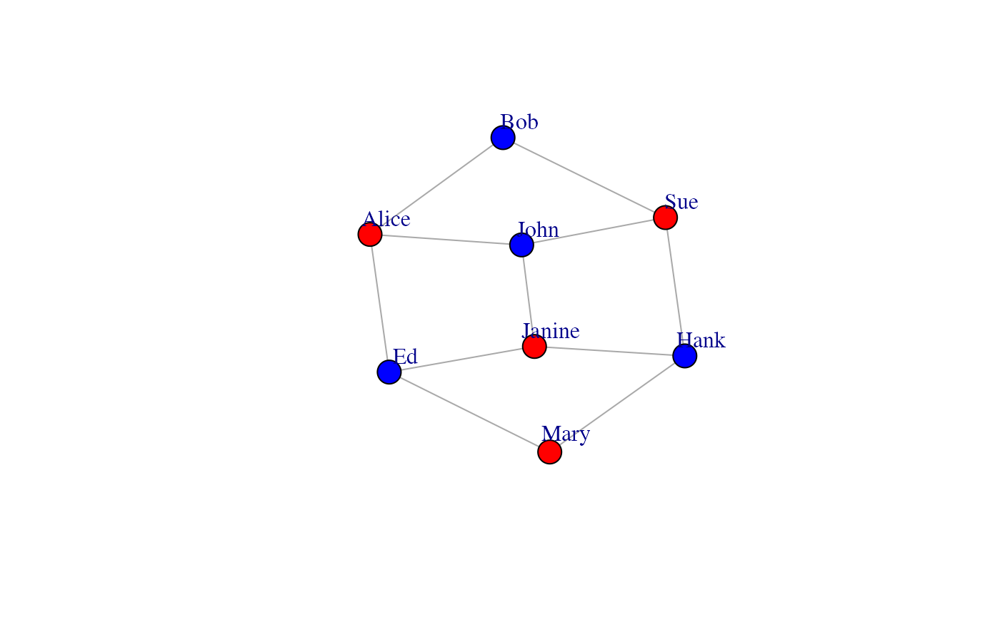
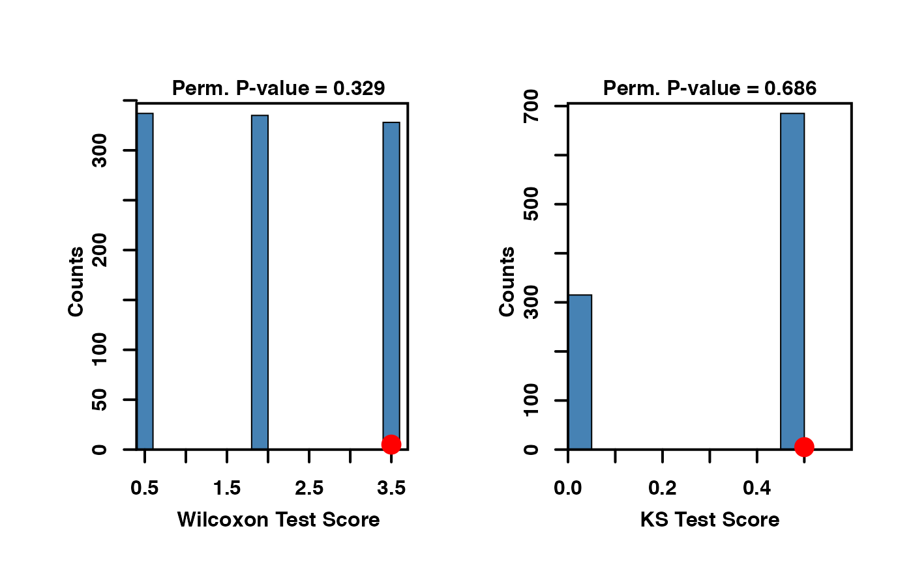
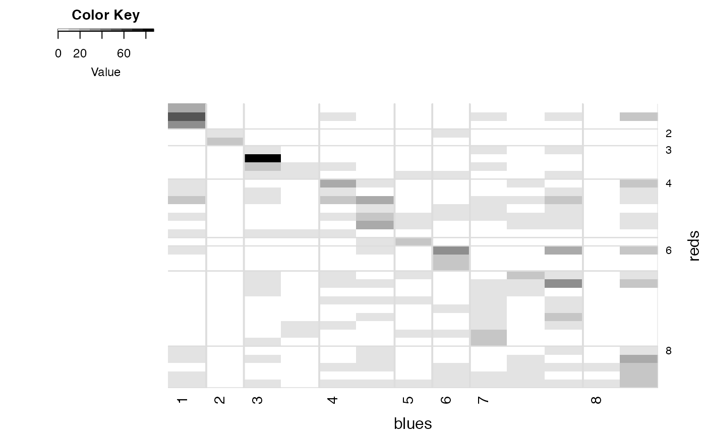

CONDOR.RmdCOmplex Network Description Of Regulators (CONDOR) implements methods for clustering bipartite networks and estimating the contribution of each node to its community’s modularity. For an application of this method to identify diesease-associated single nucleotide polymorphisms, see (https://journals.plos.org/ploscompbiol/article?id=10.1371/journal.pcbi.1005033).
library(netZooR)
condor works with an edgelist (elist in the code below) as its input.
r = c(1,1,1,2,2,2,3,3,3,4,4); b = c(1,2,3,1,2,4,2,3,4,3,4); reds <- c("Alice","Sue","Janine","Mary") blues <- c("Bob","John","Ed","Hank") elist <- data.frame(red=reds[r], blue=blues[b])
In elist, notice all nodes of the same type–women and men in this case–appear in the same column together. This is a requirement. create.condor.object will throw an error if a node appears in both columns.
condor.object <- create.condor.object(elist)
A condor.object is just a list. You can look at the different items using names
names(condor.object)
## [1] "G" "edges" "Qcoms" "modularity" "red.memb"
## [6] "blue.memb" "qscores"condor.cluster will cluster the nodes and produce the overall modularity along with two community membership data.frames:
condor.object <- condor.cluster(condor.object)
## [1] "modularity of projected graph 0"
## [1] "Q = 0"
## [1] "Q = 0.132231404958678"
## [1] "Q = 0.148760330578512"
## [1] "Q = 0.148760330578512"print(condor.object$red.memb)
## red.names com
## 1 Alice 2
## 2 Janine 1
## 3 Mary 1
## 4 Sue 1print(condor.object$blue.memb)
## blue.names com
## 1 Bob 2
## 2 Ed 2
## 3 Hank 1
## 4 John 2Nodes in first community are {Alice, John, Bob, Sue}, nodes in second community are {Ed, Janine, Hank, Mary} based on the modularity maximization. Here’s a picture:
gtoy = graph.edgelist(as.matrix(elist),directed=FALSE) set.graph.attribute(gtoy, "layout", layout.kamada.kawai(gtoy))
## IGRAPH 52c9f62 UN-- 8 11 --
## + attr: layout (g/n), name (v/c)
## + edges from 52c9f62 (vertex names):
## [1] Alice--Bob Alice--John Alice--Ed Bob --Sue John --Sue
## [6] Sue --Hank John --Janine Ed --Janine Hank --Janine Ed --Mary
## [11] Hank --Maryplot(gtoy,vertex.label.dist=2)

To get each node’s modularity contribution (as a fraction of the community’s modularity), run
condor.object <- condor.qscore(condor.object)
If you have a subset of nodes that you think are more likely to lie at the cores of your communities, you can test this using condor.core.enrich:
q_women <- condor.object$qscores$red.qscore core_stats <- condor.core.enrich(test_nodes=c("Alice","Mary"), q=q_women,perm=TRUE,plot.hist=TRUE)

condor also works on weighted bipartite networks. The package comes with a quantitative pollination network data set (Small 1976) taken from the NCEAS interaction webs data base, containing interactions between 13 plants and 34 pollinators.
data(small1976) condor.object <- create.condor.object(small1976) condor.object <- condor.cluster(condor.object, project=F)
## [1] "modularity of projected graph 0.525346928655047"
## [1] "Q = 0.52666696475026"
## [1] "Q = 0.52666696475026"condor.plot.heatmap(condor.object)
